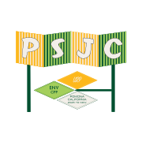

Cal Poly Pomona · Department of Urban & Regional Planning
Reimagining place-based injustices.
The Pomona Spatial Justice Collaborative (PSJC) is a teaching and research initiative housed in the Department of Urban and Regional Planning and supported through SPICE Grant funding by Cal Poly Pomona. Led by Director Chris Giamarino, PSJC invites academics, activists, architects, and artists to address inequitable distributions of resources and collectively reimagine place-based injustices through formal and informal planning and design.
URPENVCPPSPICE Grant
